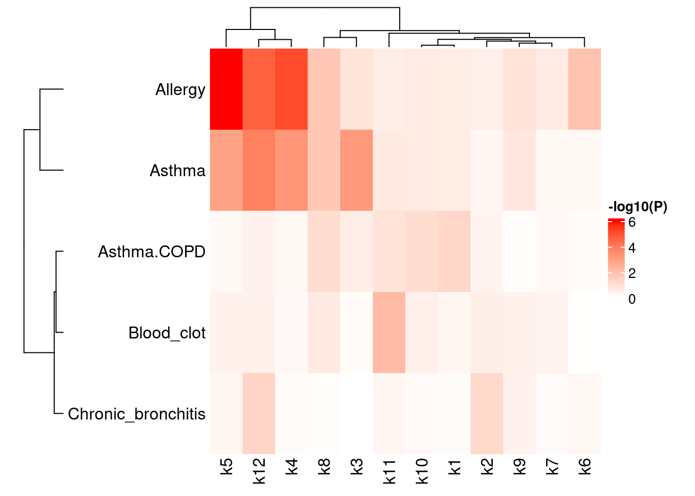

A testrun for MAGMA
Jing Gu
2024-10-01
Last updated: 2024-10-01
Checks: 7 0
Knit directory: lung_lymph_scMultiomics/
This reproducible R Markdown analysis was created with workflowr (version 1.7.1). The Checks tab describes the reproducibility checks that were applied when the results were created. The Past versions tab lists the development history.
Great! Since the R Markdown file has been committed to the Git repository, you know the exact version of the code that produced these results.
Great job! The global environment was empty. Objects defined in the global environment can affect the analysis in your R Markdown file in unknown ways. For reproduciblity it’s best to always run the code in an empty environment.
The command set.seed(20221229) was run prior to running
the code in the R Markdown file. Setting a seed ensures that any results
that rely on randomness, e.g. subsampling or permutations, are
reproducible.
Great job! Recording the operating system, R version, and package versions is critical for reproducibility.
Nice! There were no cached chunks for this analysis, so you can be confident that you successfully produced the results during this run.
Great job! Using relative paths to the files within your workflowr project makes it easier to run your code on other machines.
Great! You are using Git for version control. Tracking code development and connecting the code version to the results is critical for reproducibility.
The results in this page were generated with repository version 99afc0f. See the Past versions tab to see a history of the changes made to the R Markdown and HTML files.
Note that you need to be careful to ensure that all relevant files for
the analysis have been committed to Git prior to generating the results
(you can use wflow_publish or
wflow_git_commit). workflowr only checks the R Markdown
file, but you know if there are other scripts or data files that it
depends on. Below is the status of the Git repository when the results
were generated:
Ignored files:
Ignored: analysis/.RData
Ignored: analysis/.Rhistory
Ignored: analysis/figure/
Untracked files:
Untracked: analysis/.ipynb_checkpoints/
Untracked: analysis/GOBP_B_CELL_ACTIVATION_INVOLVED_IN_IMMUNE_RESPONSE.v2024.1.Hs.gmt
Untracked: analysis/test.pdf
Untracked: analysis/test_GO_enrichment.ipynb
Untracked: analysis/u19_atac_fastTopics.Rmd
Untracked: analysis/u19_regulon_enrichment.Rmd
Untracked: analysis/ukb-a-446.log
Untracked: analysis/ukb-a-446_GO_immune.log
Untracked: code/run_magma/
Untracked: data/DA_peaks_Tsub_vs_others.RDS
Untracked: data/DA_peaks_by_cell_type.RDS
Untracked: data/TF_target_sizes_GRN.txt
Untracked: data/Tsuo2022_meta_analysis_asthma_risk_genes.csv
Untracked: data/U19_T_cell_peaks_metadata.RDS
Untracked: data/Wang_2020_T_cell_peaks_metadata.RDS
Untracked: data/lung_GRN_CD4_T_edges.txt
Untracked: data/lung_GRN_CD8_T_edges.txt
Untracked: data/lung_GRN_Th17_edges.txt
Untracked: data/lung_GRN_Treg_edges.txt
Untracked: output/annotation_reference.txt
Untracked: output/fastTopics
Untracked: output/homer/
Untracked: output/ldsc_enrichment
Untracked: output/lung_immune_atac_peaks_high_ePIPs.RDS
Untracked: output/positions.bed
Untracked: output/topic1/
Untracked: output/topic10/
Untracked: output/topic11/
Untracked: output/topic12/
Untracked: output/topic2/
Untracked: output/topic3/
Untracked: output/topic4/
Untracked: output/topic5/
Untracked: output/topic6/
Untracked: output/topic7/
Untracked: output/topic8/
Untracked: output/topic9/
Untracked: test.pdf
Unstaged changes:
Modified: analysis/identify_regulatory_programs_u19_GRN.Rmd
Modified: analysis/rank_TFs_from_pairwise_comparison.ipynb
Modified: analysis/u19_h2g_enrichment.Rmd
Deleted: code/run_fastTopic.R
Deleted: lung_immune_fine_mapping.Rproj
Note that any generated files, e.g. HTML, png, CSS, etc., are not included in this status report because it is ok for generated content to have uncommitted changes.
These are the previous versions of the repository in which changes were
made to the R Markdown (analysis/test_magma.Rmd) and HTML
(docs/test_magma.html) files. If you’ve configured a remote
Git repository (see ?wflow_git_remote), click on the
hyperlinks in the table below to view the files as they were in that
past version.
| File | Version | Author | Date | Message |
|---|---|---|---|---|
| Rmd | 99afc0f | Jing Gu | 2024-10-01 | expand to more imune diseases |
| html | fb48cea | Jing Gu | 2024-09-26 | Build site. |
| Rmd | 1e09bcb | Jing Gu | 2024-09-26 | test enrichment for immune marker genes |
| html | e774c6e | Jing Gu | 2024-09-25 | Build site. |
| Rmd | b7f596f | Jing Gu | 2024-09-25 | topic modeling for scRNA-seq dataset |
| html | 9a8b700 | Jing Gu | 2024-09-25 | Build site. |
| Rmd | 32e347d | Jing Gu | 2024-09-25 | gene-set association with magma |
| html | 9f5d519 | Jing Gu | 2024-09-25 | Build site. |
| Rmd | 3b84e56 | Jing Gu | 2024-09-25 | gene-set association with magma |
| html | f649cf3 | Jing Gu | 2024-09-19 | Build site. |
| Rmd | 1e7e576 | Jing Gu | 2024-09-19 | look into k5 genes with high z scores |
| html | ab42a52 | Jing Gu | 2024-09-16 | Build site. |
| Rmd | a2b320f | Jing Gu | 2024-09-16 | test topic enrichment for genetic risks |
MAGMA
Gene analysis A linear principal component regression model that estimates whether there is genetic effect of gene g on the phenotype Y, conditional on all covariates. The model first projects genotype matrix for a gene g onto its PCs, pruning away PCs with very small eigenvalues. Then it performs F test in the regression of Y on SNP matrix and covariates to estimate genetic effect.
\[ Y = \alpha_{0g}\vec 1 + X_g^*\alpha_g + W\beta_g + \epsilon_g \] When inividual geneotype matrix not available, MAGMA performs gene test with mean \(X^2\) statistics and a gene p-value is then obtained by using a known approximation of the sampling distribution. Please refer to the following paper for details of approximation for the distribution of the weighted combination of p-values. This model requires summary statistics and reference LD panel.
Ref: Hou C (2005) A simple approximation for the distribution of the weighted combination of non-independent or independent probabilities. Stat Probabil Lett 73: 179–187.
Competitive gene-set analysis
One-sided Two-sample T test or linear regression in equivalence is applied to test whether the genes in a gene set are more strongly associated with Y or not.
Let Z denote the association z-score. Let \(\S_s\) be an indicator variable with element \(s_g = 1\) defined as for gene g in gene set s and 0 otherwise. The goal is to test whether \(\beta_s\) is greater than zero, which represents the difference in association between genes in the gene set and genes outside the gene set.
\[ Z = \beta_{0s}\vec 1 + S_s\beta_s + \epsilon \] This also be tested by unpaired two sample T-test, while two samples can have unequal variances and sample sizes.
Testrun
Procedure:
- annotate SNPs and genes
- gene-based analysis
- gene-set analysis
Gene-set associations with risks for immune diseases
Testing on all marker genes
When corrected for multiple testing, tests will be significant if p-value lower than ~0.005. Around half of the tests show significant p-values, which makes us wonder if p-values are inflated. Then we try using the input genes for topic modeling rather than all genes as background so that they are more comparable.
- Total number of genes reduced from to 18K to ~16K
- P values for the reduced background genes are very similar to the full ones.

Testing on top 100 genes from each topic
The supplementary table from MAGMA paper shows the mean type 1 error
rates are well controlled for a set of size 100. The MSigDB
canonical pathways contains 1320 gene sets from a number of
different databases. I can look into the average size of the gene sets.
Summarizing enrichment results by traits
Instead of all DE genes, I used top 100 up-regulated genes ranked by z scores to test the enrichment for each topic across immune traits. For Asthma, now we see only k3, k4, k5 and k12 (4 out of 12) topics show significant enrichment after multiple testing correction. For other immune diseases, allergy displays very strong enrichment for k4, k5 and k12, but none of the others have enrichment signal.
Loading required package: grid========================================
ComplexHeatmap version 2.14.0
Bioconductor page: http://bioconductor.org/packages/ComplexHeatmap/
Github page: https://github.com/jokergoo/ComplexHeatmap
Documentation: http://jokergoo.github.io/ComplexHeatmap-reference
If you use it in published research, please cite either one:
- Gu, Z. Complex Heatmap Visualization. iMeta 2022.
- Gu, Z. Complex heatmaps reveal patterns and correlations in multidimensional
genomic data. Bioinformatics 2016.
The new InteractiveComplexHeatmap package can directly export static
complex heatmaps into an interactive Shiny app with zero effort. Have a try!
This message can be suppressed by:
suppressPackageStartupMessages(library(ComplexHeatmap))
========================================
Assess topic enrichment for immune marker gene sets
Only K5 satisfies the following criteria:
- higher proportion in lungs than spleens
- significant MAGMA Z scores
Immune marker gene sets:
- GO terms for T helper cell differentiation, immune response (Th2,
Th17, Treg)
- ChatGPT: Th2 response genes, tissue-resident cell markers for lung
lymphocytes
- Tissue-resident lymphocyte markers: S1PR1, LMNA, SELL, RGS1, KLRG1, CD69, DUSP6, RGCC, SOCS1, ITGAE, CCR7, CTLA4, PDCD1, IL2RB, ITGA1, CXCR3
Testing on all up-regulated topic marker genes
Enrichment test: Fisher’s exact test
Topic 5 specific genes are enriched for tissue-resident genes, Treg/Th17 differentiation, and Th17 immune response.
Testing on genes having high Asthma MAGMA Z scores
Input: Topic 5 genes with MAGMA Z score >= 1.64, background genes for topic modeling (~17K) Enrichment test: Fisher’s exact test
Topic 5 specific genes with high Asthma z scores are enriched for tissue-resident genes, Treg/Th17/Th2 differentiation, and Th17 immune response.
Testing on genes having high Allergy MAGMA Z scores
Input: Topic 5 genes with MAGMA Z score >= 1.64, background genes for topic modeling (~17K) Enrichment test: Fisher’s exact test
Topic 5 specific genes with high allergy z scores are enriched for T cell activation involved in immune response.
Gene-set associations for known immune cell markers
Most immune cell markers were obtained from Gene ontology. The tissue-resident genes were from the single-cell lung paper and ChatGPT. After multiple correction (adj.P < 0.002), tissue-resident markers do not show significance for the gene-set association with Asthma. Neither do the genes involved in cell-cell adhesion or cell migration. The gene sets that are significantly enriched for higher association with Asthma risks are activation of T/B cells and T cell lineage differentiation.
R version 4.2.0 (2022-04-22)
Platform: x86_64-pc-linux-gnu (64-bit)
Running under: CentOS Linux 7 (Core)
Matrix products: default
BLAS/LAPACK: /software/openblas-0.3.13-el7-x86_64/lib/libopenblas_haswellp-r0.3.13.so
locale:
[1] LC_CTYPE=en_US.UTF-8 LC_NUMERIC=C LC_TIME=C
[4] LC_COLLATE=C LC_MONETARY=C LC_MESSAGES=C
[7] LC_PAPER=C LC_NAME=C LC_ADDRESS=C
[10] LC_TELEPHONE=C LC_MEASUREMENT=C LC_IDENTIFICATION=C
attached base packages:
[1] grid stats graphics grDevices utils datasets methods
[8] base
other attached packages:
[1] colorRamp2_0.1.0 ComplexHeatmap_2.14.0 tidyr_1.3.1
[4] dplyr_1.1.4 data.table_1.15.4 workflowr_1.7.1
loaded via a namespace (and not attached):
[1] Rcpp_1.0.12 circlize_0.4.15 getPass_0.2-2
[4] png_0.1-8 ps_1.7.6 rprojroot_2.0.4
[7] digest_0.6.35 foreach_1.5.2 utf8_1.2.4
[10] R6_2.5.1 stats4_4.2.0 evaluate_0.23
[13] httr_1.4.7 highr_0.10 pillar_1.9.0
[16] GlobalOptions_0.1.2 rlang_1.1.3 rstudioapi_0.15.0
[19] whisker_0.4.1 callr_3.7.3 jquerylib_0.1.4
[22] S4Vectors_0.36.2 GetoptLong_1.0.5 DT_0.33
[25] rmarkdown_2.26 stringr_1.5.1 htmlwidgets_1.6.4
[28] compiler_4.2.0 httpuv_1.6.14 xfun_0.43
[31] pkgconfig_2.0.3 BiocGenerics_0.44.0 shape_1.4.6
[34] htmltools_0.5.8.1 tidyselect_1.2.1 tibble_3.2.1
[37] IRanges_2.32.0 codetools_0.2-19 matrixStats_1.2.0
[40] fansi_1.0.6 withr_3.0.0 crayon_1.5.2
[43] later_1.3.2 jsonlite_1.8.8 lifecycle_1.0.4
[46] git2r_0.33.0 magrittr_2.0.3 cli_3.6.2
[49] stringi_1.7.6 cachem_1.0.8 fs_1.6.4
[52] promises_1.3.0 doParallel_1.0.17 bslib_0.7.0
[55] generics_0.1.3 vctrs_0.6.5 rjson_0.2.21
[58] RColorBrewer_1.1-3 Cairo_1.6-2 iterators_1.0.14
[61] tools_4.2.0 glue_1.7.0 purrr_1.0.2
[64] crosstalk_1.2.1 processx_3.8.3 parallel_4.2.0
[67] fastmap_1.1.1 yaml_2.3.8 clue_0.3-65
[70] colorspace_2.1-0 cluster_2.1.6 knitr_1.46
[73] sass_0.4.9